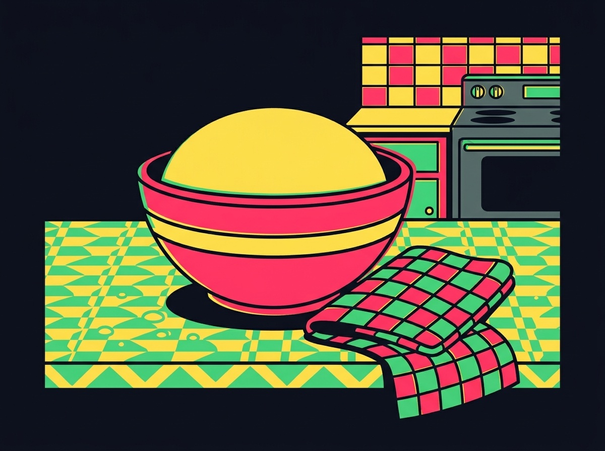
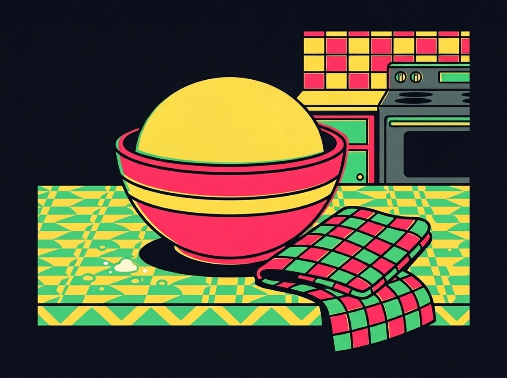

Card 02 · Big Paulie
The Friday dough
Friday’s dough I make on Thursday. It sits all night under a dish towel on the bottom shelf and does every bit of the work I would have rushed. Nobody ever asked me for this recipe on a Thursday. — Big Paulie, who has never once been hurried
Pasta per venerdì
TWO PIES · 18 HOURS COLD · NO ROLLING PIN
WHAT YOU NEED
- 4 c. bread flour, 500 g
- 1 1/3 c. cold water, 325 g
- 1 tsp active dry yeast
- 2 tsp salt
- 2 tbsp olive oil
WHAT YOU DO
- Flour, water, yeast. Rest 20 minutes.
- Salt and oil in. Knead 8 minutes.
- Cover. Icebox, bottom shelf, 18 hours.
- Out at noon. Two hours to warm up.
- Stretch by hand. A pin takes the air out.

